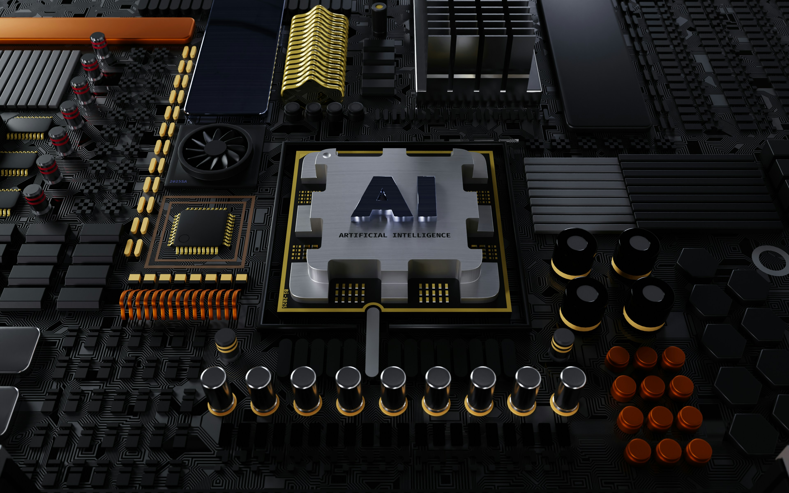

Visión por Computadora (Computer Vision)
La Visión por Computadora es un campo de la inteligencia artificial que permite a las máquinas interpretar y
comprender el contenido visual del mundo, como imágenes y videos. Su objetivo es replicar la capacidad
humana de ver y analizar el entorno, utilizando algoritmos que pueden identificar objetos, reconocer rostros,
detectar patrones y tomar decisiones basadas en información visual.
Entre sus aplicaciones más destacadas se encuentran el reconocimiento facial en sistemas de seguridad, la
detección de objetos en vehículos autónomos, el diagnóstico médico a partir de imágenes radiológicas, y los
filtros inteligentes en redes sociales. También se utiliza en agricultura de precisión, donde drones equipados
con visión por computadora monitorean el estado de los cultivos, y en manufactura para detectar defectos
en productos.

Las técnicas más avanzadas en visión por computadora están basadas en redes neuronales convolucionales
(CNNs), que son especialmente eficaces para detectar patrones espaciales en imágenes. Estas redes
aprenden características visuales jerárquicas —como bordes, formas y estructuras— mediante un
entrenamiento supervisado con grandes conjuntos de datos etiquetados.
A pesar de sus logros, la visión por computadora aún enfrenta desafíos como la interpretación de escenas
complejas, la detección en condiciones adversas (baja luz, niebla, ángulos complicados), y los sesgos en los
datos de entrenamiento que pueden afectar la precisión del sistema. La mejora continua en hardware,
algoritmos y disponibilidad de datos está permitiendo avances rápidos hacia sistemas más robustos y
generalizables.